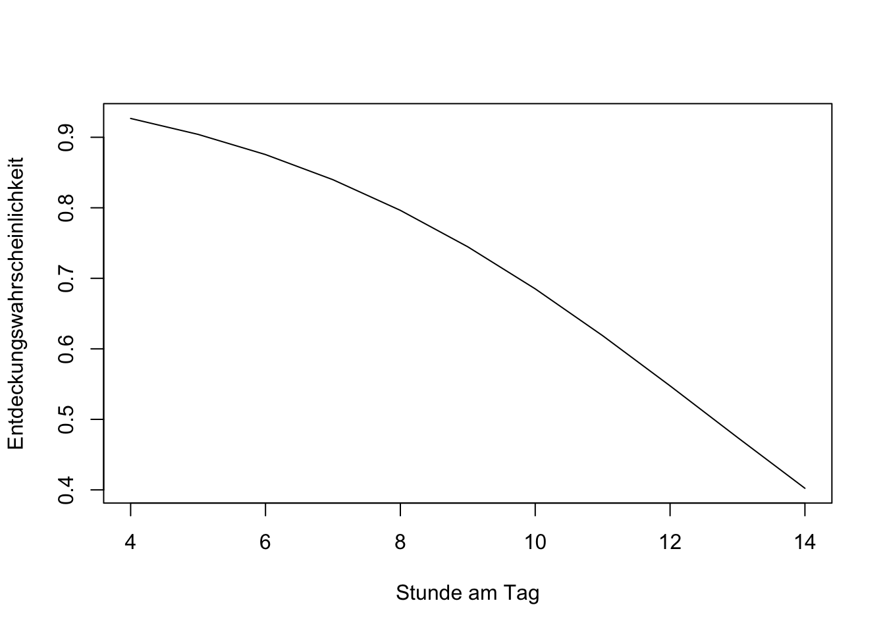

![]()
library(here)
library(tidyverse)
amseln <- read.csv(here("daten/Amsel.csv"))
head(amseln, 2) sto y.1 y.2 y.3 y.4
1 4203 TRUE TRUE NA NA
2 4358 TRUE TRUE NA NAVerwenden Sie für diese Übung die Daten, die im Rahmen dieses Kurses in den letzten Jahr erhoben wurden. Wir verwenden dafür das Vorkommen von Amseln.
Damit wir ein Occupancymodell anpassen können, müssen wir erst ein unmarked-Objekt erstellen. Dafür brauchen wir die Sichtungsdaten aus der letzten Aufgabe, Kovariaten für jede Aufnahme (Tag seit dem 1.5.21 und Uhrzeit) und Kovariaten für die Standorte. Für die Standorte verwenden wir den Anteil Wald und versiegelte Flächen innerhalb der 1 ha Zelle.
Die Sichtungsdaten befinden sich in der Datei Amsel.csv. (Hinweis, lassen Sie sich von here() nicht verwirren. Es stellt lediglich sicher, dass die Pfade bei mir stimmen). Alle Dateien finden Sie bei StudIP.
library(here)
library(tidyverse)
amseln <- read.csv(here("daten/Amsel.csv"))
head(amseln, 2) sto y.1 y.2 y.3 y.4
1 4203 TRUE TRUE NA NA
2 4358 TRUE TRUE NA NAsto ist die ID des Standortsy.1 bis y.4 sind die vier Aufnahmen. TRUE bedeutet, dass ein Individum gesehen wurde, FALSE das Gegenteil. NA heißt, dass diese Aufnahme nicht durchgeführt wurde.In einem zweiten Schritt müssen wir noch die Kovariaten einlesen. Kovariaten der Aufnahmen
tag <- read.csv(here("daten/tag.csv"))
stunde <- read.csv(here("daten/stunde.csv"))Kovariate Standorte
sto <- read.csv(here("daten/standorte.csv"))In einem letzten Schritt müssen wir die Aufnahmen (dat) und die Standorte zusammen bringen. Dafür bietet sich ein left_join() ans.
head(amseln, 2) sto y.1 y.2 y.3 y.4
1 4203 TRUE TRUE NA NA
2 4358 TRUE TRUE NA NAhead(sto, 2) sto x y wald wald_max versiegelt
1 1 4319876 3164431 89.25991 97 0
2 2 4319976 3164430 88.83740 97 0sto1 <- left_join(amseln, sto)
head(sto1) sto y.1 y.2 y.3 y.4 x y wald wald_max versiegelt
1 4203 TRUE TRUE NA NA 4314817 3160299 6.8438358 50 47.0022850
2 4358 TRUE TRUE NA NA 4314315 3160206 0.5296271 53 0.5440316
3 4681 TRUE FALSE NA NA 4314513 3160003 64.0960999 97 0.8555782
4 4849 TRUE TRUE NA NA 4315011 3159896 54.4250298 90 5.0157666
5 1281 TRUE TRUE TRUE TRUE 4321947 3162302 59.3031540 99 0.0000000
6 1394 TRUE TRUE TRUE TRUE 4321446 3162209 64.0914612 93 0.0000000wald und fügen Sie diese als neue Spalte wald_1 dem Objekt sto1 hinzu.unmakredFrameOccu mit den Sichtungsdaten der Amseln und den Kovariaten. Bennen Sie dieses Objekt of.m1.m1 an.y.1) und ein Konfidenzintervall (verwenden Sie dafür \(\hat{p} \pm \frac{z_\alpha \sqrt{p (1 - p)}}{\sqrt{n}}\); nehmen sie für \(z_\alpha = 1.96\) an). Vergleichen Sie das Ergebnis mit einer Vorhersage aus dem Model m1 für ein Pixel mit dem mittleren Waldanteil.# Lösung Übung 1
library(dplyr)
library(ggplot2)
library(unmarked)
# 1
sto1$wald_1 <- (sto1$wald - mean(sto1$wald)) / sd(sto1$wald)
# 2
of <- unmarkedFrameOccu(
y = sto1[, c("y.1", "y.2", "y.3", "y.4")],
siteCovs = sto1,
obsCovs = list(
tag = tag[, -1],
stunde = stunde[, -1]
)
)
# 3
m1 <- occu(~ stunde + tag # p
~ wald_1 + I(wald_1^2),
data = of)
# 4
summary(m1)
Call:
occu(formula = ~stunde + tag ~ wald_1 + I(wald_1^2), data = of)
Occupancy (logit-scale):
Estimate SE z P(>|z|)
(Intercept) 3.34 2.01 1.661 0.0967
wald_1 -5.18 8.75 -0.592 0.5540
I(wald_1^2) 7.89 10.91 0.723 0.4697
Detection (logit-scale):
Estimate SE z P(>|z|)
(Intercept) 3.71017 1.01139 3.67 0.000244
stunde -0.29330 0.10617 -2.76 0.005737
tag -0.00668 0.00576 -1.16 0.245841
AIC: 334.2341
Number of sites: 86# 5
# Neue Daten erstellen
nd <- data.frame(tag = 0, stunde = 4:14)
nd <- cbind(nd, predict(m1, nd, type = "det"))
plot(nd$stunde, nd$Predicted, type = "l", xlab = "Stunde am Tag",
ylab = "Entdeckungswahrscheinlichkeit")
# 6
# Amseln y.1
table(amseln$y.1)
FALSE TRUE
20 65 (p <- 65 / 85)[1] 0.7647059# KI
p + (c(-1.96, 1.96) * sqrt(p * (1 - p))) / sqrt(85)[1] 0.6745281 0.8548836# Aus dem Modell
nd <- data.frame(wald_1 = 0)
nd <- cbind(nd, predict(m1, nd, type = "state"))
nd wald_1 Predicted SE lower upper
1 0 0.9658426 0.06636967 0.3541211 0.9993147